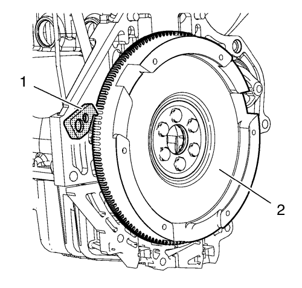
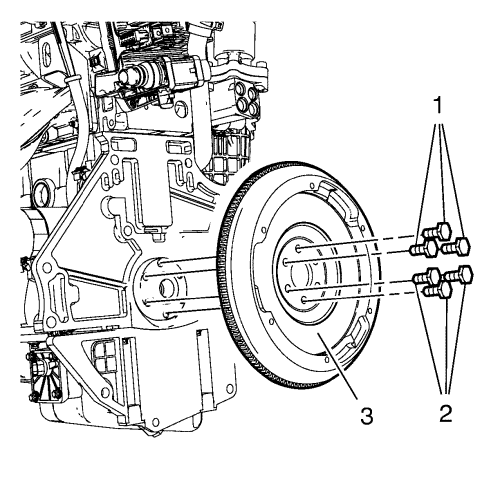

Sustitución del volante motor
Herramientas especiales
| • | EN-652 Herramienta de bloqueo del volante motor |
| • | EN-45059 Kit de goniómetro de par de apriete |
Si desea informarse sobre herramientas regionales equivalentes, consultar Herramientas especiales .
Procedimiento de desmontaje
- Abra el capó.
- Extraiga la caja de cambios. Consultar Sustitución de la caja de cambios .

- Monte la herramienta de retención EN-652 (1) y bloquee el volante motor mediante la corona dentada del motor de arranque.
- Suelte los 6 pernos del volante motor (1, 2).
- Desmonte la herramienta de retención EN-652 (1).

- Retire los 6 tornillos (1, 2) del volante motor.
- Desmonte el volante motor (3).
Procedimiento de montaje
- Limpie la rosca en el cigüeñal.
- Monte el volante motor (2).
- Monte la herramienta de retención EN-652 (1).
Precaución:Consulte Precaución con las fijaciones en la sección Prólogo.
- Monte los 6 tornillos NUEVOS del volante motor (1, 2) y apriete los tornillos en 3 pasos usando el kit de goniométroEN-45059.
| • | Primer paso a 35 N·m (26 lib. pie). |
| • | Segundo paso a otros 30°. |
| • | Tercer paso a otros 15°. |
- Desmonte la herramienta de retención EN-652.
- Monte la caja de cambios. Consultar Sustitución de la caja de cambios .
- Cierre el capó.
| © Copyright Chevrolet. Reservados todos los derechos |